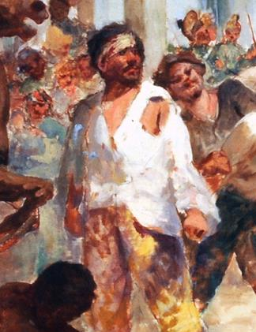
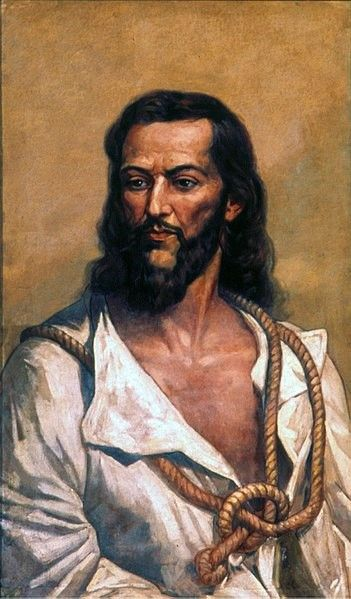

Padre Antonio Vieira
Felipe dos Santos foi um líder popular da Revolta de Vila Rica, ocorrida em 1720, na região das minas de ouro, atual Minas Gerais. Ele se opunha aos altos impostos cobrados por Portugal, especialmente à criação das casas de fundição, que controlavam e taxavam a produção de ouro. Com apoio de mineradores e comerciantes, Felipe liderou protestos contra a exploração colonial. A revolta foi duramente reprimida pelo governo português, e Felipe dos Santos foi condenado à morte, sendo executado de forma violenta. Sua atuação tornou-se um símbolo de resistência contra a opressão colonial no Brasil.

Tiradentes (Joaquim José da Silva Xavier)
Um alferes e ativista político que se tornou o mártir da Inconfidência Mineira (1789), um dos primeiros movimentos de caráter separatista contra o domínio português. Ele foi o único a ser executado e esquartejado, e sua imagem foi transformada em um símbolo republicano de luta pela liberdade.